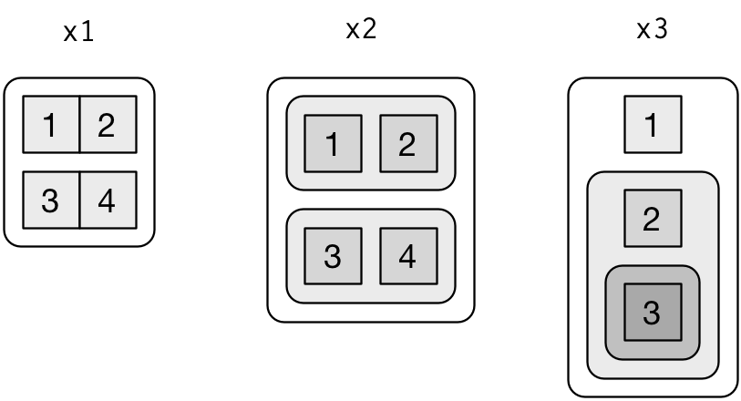

20 Vectors
20.1 Introduction
So far this book has focussed on tibbles and packages that work with them. But as you start to write your own functions, and dig deeper into R, you need to learn about vectors, the objects that underlie tibbles. If you’ve learned R in a more traditional way, you’re probably already familiar with vectors, as most R resources start with vectors and work their way up to tibbles. I think it’s better to start with tibbles because they’re immediately useful, and then work your way down to the underlying components.
Vectors are particularly important as most of the functions you will write will work with vectors. It is possible to write functions that work with tibbles (like ggplot2, dplyr, and tidyr), but the tools you need to write such functions are currently idiosyncratic and immature. I am working on a better approach, https://github.com/hadley/lazyeval, but it will not be ready in time for the publication of the book. Even when complete, you’ll still need you understand vectors, it’ll just make it easier to write a user-friendly layer on top.
20.1.1 Prerequisites
The focus of this chapter is on base R data structures, so it isn’t essential to load any packages. We will, however, use a handful of functions from the purrr package to avoid some inconsistencies in base R.
library(tidyverse)20.2 Vector basics
There are two types of vectors:
Atomic vectors, of which there are six types: logical, integer, double, character, complex, and raw. Integer and double vectors are collectively known as numeric vectors.
Lists, which are sometimes called recursive vectors because lists can contain other lists.
The chief difference between atomic vectors and lists is that atomic vectors are homogeneous, while lists can be heterogeneous. There’s one other related object: NULL. NULL is often used to represent the absence of a vector (as opposed to NA which is used to represent the absence of a value in a vector). NULL typically behaves like a vector of length 0. Figure 20.1 summarises the interrelationships.

Figure 20.1: The hierarchy of R’s vector types
Every vector has two key properties:
Its type, which you can determine with
typeof().typeof(letters) #> [1] "character" typeof(1:10) #> [1] "integer"Its length, which you can determine with
length().x <- list("a", "b", 1:10) length(x) #> [1] 3
Vectors can also contain arbitrary additional metadata in the form of attributes. These attributes are used to create augmented vectors which build on additional behaviour. There are four important types of augmented vector:
- Factors are built on top of integer vectors.
- Dates and date-times are built on top of numeric vectors.
- Data frames and tibbles are built on top of lists.
This chapter will introduce you to these important vectors from simplest to most complicated. You’ll start with atomic vectors, then build up to lists, and finish off with augmented vectors.
20.3 Important types of atomic vector
The four most important types of atomic vector are logical, integer, double, and character. Raw and complex are rarely used during a data analysis, so I won’t discuss them here.
20.3.1 Logical
Logical vectors are the simplest type of atomic vector because they can take only three possible values: FALSE, TRUE, and NA. Logical vectors are usually constructed with comparison operators, as described in comparisons. You can also create them by hand with c():
1:10 %% 3 == 0
#> [1] FALSE FALSE TRUE FALSE FALSE TRUE FALSE FALSE TRUE FALSE
c(TRUE, TRUE, FALSE, NA)
#> [1] TRUE TRUE FALSE NA20.3.2 Numeric
Integer and double vectors are known collectively as numeric vectors. In R, numbers are doubles by default. To make an integer, place an L after the number:
typeof(1)
#> [1] "double"
typeof(1L)
#> [1] "integer"
1.5L
#> [1] 1.5The distinction between integers and doubles is not usually important, but there are two important differences that you should be aware of:
Doubles are approximations. Doubles represent floating point numbers that can not always be precisely represented with a fixed amount of memory. This means that you should consider all doubles to be approximations. For example, what is square of the square root of two?
x <- sqrt(2) ^ 2 x #> [1] 2 x - 2 #> [1] 4.44e-16This behaviour is common when working with floating point numbers: most calculations include some approximation error. Instead of comparing floating point numbers using
==, you should usedplyr::near()which allows for some numerical tolerance.Integers have one special value:
NA, while doubles have four:NA,NaN,Infand-Inf. All three special valuesNaN,Infand-Infcan arise during division:c(-1, 0, 1) / 0 #> [1] -Inf NaN InfAvoid using
==to check for these other special values. Instead use the helper functionsis.finite(),is.infinite(), andis.nan():0 Inf NA NaN is.finite()x is.infinite()x is.na()x x is.nan()x
20.3.3 Character
Character vectors are the most complex type of atomic vector, because each element of a character vector is a string, and a string can contain an arbitrary amount of data.
You’ve already learned a lot about working with strings in strings. Here I wanted to mention one important feature of the underlying string implementation: R uses a global string pool. This means that each unique string is only stored in memory once, and every use of the string points to that representation. This reduces the amount of memory needed by duplicated strings. You can see this behaviour in practice with pryr::object_size():
x <- "This is a reasonably long string."
pryr::object_size(x)
#> 136 B
y <- rep(x, 1000)
pryr::object_size(y)
#> 8.13 kBy doesn’t take up 1,000x as much memory as x, because each element of y is just a pointer to that same string. A pointer is 8 bytes, so 1000 pointers to a 136 B string is 8 * 1000 + 136 = 8.13 kB.
20.3.4 Missing values
Note that each type of atomic vector has its own missing value:
NA # logical
#> [1] NA
NA_integer_ # integer
#> [1] NA
NA_real_ # double
#> [1] NA
NA_character_ # character
#> [1] NANormally you don’t need to know about these different types because you can always use NA and it will be converted to the correct type using the implicit coercion rules described next. However, there are some functions that are strict about their inputs, so it’s useful to have this knowledge sitting in your back pocket so you can be specific when needed.
20.3.5 Exercises
Describe the difference between
is.finite(x)and!is.infinite(x).Read the source code for
dplyr::near()(Hint: to see the source code, drop the()). How does it work?A logical vector can take 3 possible values. How many possible values can an integer vector take? How many possible values can a double take? Use google to do some research.
Brainstorm at least four functions that allow you to convert a double to an integer. How do they differ? Be precise.
What functions from the readr package allow you to turn a string into logical, integer, and double vector?
20.4 Using atomic vectors
Now that you understand the different types of atomic vector, it’s useful to review some of the important tools for working with them. These include:
How to convert from one type to another, and when that happens automatically.
How to tell if an object is a specific type of vector.
What happens when you work with vectors of different lengths.
How to name the elements of a vector.
How to pull out elements of interest.
20.4.1 Coercion
There are two ways to convert, or coerce, one type of vector to another:
Explicit coercion happens when you call a function like
as.logical(),as.integer(),as.double(), oras.character(). Whenever you find yourself using explicit coercion, you should always check whether you can make the fix upstream, so that the vector never had the wrong type in the first place. For example, you may need to tweak your readrcol_typesspecification.Implicit coercion happens when you use a vector in a specific context that expects a certain type of vector. For example, when you use a logical vector with a numeric summary function, or when you use a double vector where an integer vector is expected.
Because explicit coercion is used relatively rarely, and is largely easy to understand, I’ll focus on implicit coercion here.
You’ve already seen the most important type of implicit coercion: using a logical vector in a numeric context. In this case TRUE is converted to 1 and FALSE converted to 0. That means the sum of a logical vector is the number of trues, and the mean of a logical vector is the proportion of trues:
x <- sample(20, 100, replace = TRUE)
y <- x > 10
sum(y) # how many are greater than 10?
#> [1] 44
mean(y) # what proportion are greater than 10?
#> [1] 0.44You may see some code (typically older) that relies on implicit coercion in the opposite direction, from integer to logical:
if (length(x)) {
# do something
}In this case, 0 is converted to FALSE and everything else is converted to TRUE. I think this makes it harder to understand your code, and I don’t recommend it. Instead be explicit: length(x) > 0.
It’s also important to understand what happens when you try and create a vector containing multiple types with c(): the most complex type always wins.
typeof(c(TRUE, 1L))
#> [1] "integer"
typeof(c(1L, 1.5))
#> [1] "double"
typeof(c(1.5, "a"))
#> [1] "character"An atomic vector can not have a mix of different types because the type is a property of the complete vector, not the individual elements. If you need to mix multiple types in the same vector, you should use a list, which you’ll learn about shortly.
20.4.2 Test functions
Sometimes you want to do different things based on the type of vector. One option is to use typeof(). Another is to use a test function which returns a TRUE or FALSE. Base R provides many functions like is.vector() and is.atomic(), but they often returns surprising results. Instead, it’s safer to use the is_* functions provided by purrr, which are summarised in the table below.
| lgl | int | dbl | chr | list | |
|---|---|---|---|---|---|
is_logical() |
x | ||||
is_integer() |
x | ||||
is_double() |
x | ||||
is_numeric() |
x | x | |||
is_character() |
x | ||||
is_atomic() |
x | x | x | x | |
is_list() |
x | ||||
is_vector() |
x | x | x | x | x |
Each predicate also comes with a “scalar” version, like is_scalar_atomic(), which checks that the length is 1. This is useful, for example, if you want to check that an argument to your function is a single logical value.
20.4.3 Scalars and recycling rules
As well as implicitly coercing the types of vectors to be compatible, R will also implicitly coerce the length of vectors. This is called vector recycling, because the shorter vector is repeated, or recycled, to the same length as the longer vector.
This is generally most useful when you are mixing vectors and “scalars”. I put scalars in quotes because R doesn’t actually have scalars: instead, a single number is a vector of length 1. Because there are no scalars, most built-in functions are vectorised, meaning that they will operate on a vector of numbers. That’s why, for example, this code works:
sample(10) + 100
#> [1] 109 108 104 102 103 110 106 107 105 101
runif(10) > 0.5
#> [1] TRUE TRUE FALSE TRUE TRUE TRUE FALSE TRUE TRUE TRUEIn R, basic mathematical operations work with vectors. That means that you should never need to perform explicit iteration when performing simple mathematical computations.
It’s intuitive what should happen if you add two vectors of the same length, or a vector and a “scalar”, but what happens if you add two vectors of different lengths?
1:10 + 1:2
#> [1] 2 4 4 6 6 8 8 10 10 12Here, R will expand the shortest vector to the same length as the longest, so called recycling. This is silent except when the length of the longer is not an integer multiple of the length of the shorter:
1:10 + 1:3
#> Warning in 1:10 + 1:3: longer object length is not a multiple of shorter
#> object length
#> [1] 2 4 6 5 7 9 8 10 12 11While vector recycling can be used to create very succinct, clever code, it can also silently conceal problems. For this reason, the vectorised functions in tidyverse will throw errors when you recycle anything other than a scalar. If you do want to recycle, you’ll need to do it yourself with rep():
tibble(x = 1:4, y = 1:2)
#> Error: Variables must be length 1 or 4.
#> Problem variables: 'y'
tibble(x = 1:4, y = rep(1:2, 2))
#> # A tibble: 4 × 2
#> x y
#> <int> <int>
#> 1 1 1
#> 2 2 2
#> 3 3 1
#> 4 4 2
tibble(x = 1:4, y = rep(1:2, each = 2))
#> # A tibble: 4 × 2
#> x y
#> <int> <int>
#> 1 1 1
#> 2 2 1
#> 3 3 2
#> 4 4 220.4.4 Naming vectors
All types of vectors can be named. You can name them during creation with c():
c(x = 1, y = 2, z = 4)
#> x y z
#> 1 2 4Or after the fact with purrr::set_names():
set_names(1:3, c("a", "b", "c"))
#> a b c
#> 1 2 3Named vectors are most useful for subsetting, described next.
20.4.5 Subsetting
So far we’ve used dplyr::filter() to filter the rows in a tibble. filter() only works with tibble, so we’ll need new tool for vectors: [. [ is the subsetting function, and is called like x[a]. There are four types of things that you can subset a vector with:
A numeric vector containing only integers. The integers must either be all positive, all negative, or zero.
Subsetting with positive integers keeps the elements at those positions:
x <- c("one", "two", "three", "four", "five") x[c(3, 2, 5)] #> [1] "three" "two" "five"By repeating a position, you can actually make a longer output than input:
x[c(1, 1, 5, 5, 5, 2)] #> [1] "one" "one" "five" "five" "five" "two"Negative values drop the elements at the specified positions:
x[c(-1, -3, -5)] #> [1] "two" "four"It’s an error to mix positive and negative values:
x[c(1, -1)] #> Error in x[c(1, -1)]: only 0's may be mixed with negative subscriptsThe error message mentions subsetting with zero, which returns no values:
x[0] #> character(0)This is not useful very often, but it can be helpful if you want to create unusual data structures to test your functions with.
Subsetting with a logical vector keeps all values corresponding to a
TRUEvalue. This is most often useful in conjunction with the comparison functions.x <- c(10, 3, NA, 5, 8, 1, NA) # All non-missing values of x x[!is.na(x)] #> [1] 10 3 5 8 1 # All even (or missing!) values of x x[x %% 2 == 0] #> [1] 10 NA 8 NAIf you have a named vector, you can subset it with a character vector:
x <- c(abc = 1, def = 2, xyz = 5) x[c("xyz", "def")] #> xyz def #> 5 2Like with positive integers, you can also use a character vector to duplicate individual entries.
The simplest type of subsetting is nothing,
x[], which returns the completex. This is not useful for subsetting vectors, but it is useful when subsetting matrices (and other high dimensional structures) because it lets you select all the rows or all the columns, by leaving that index blank. For example, ifxis 2d,x[1, ]selects the first row and all the columns, andx[, -1]selects all rows and all columns except the first.
To learn more about the applications of subsetting, reading the “Subsetting” chapter of Advanced R: http://adv-r.had.co.nz/Subsetting.html#applications.
There is an important variation of [ called [[. [[ only ever extracts a single element, and always drops names. It’s a good idea to use it whenever you want to make it clear that you’re extracting a single item, as in a for loop. The distinction between [ and [[ is most important for lists, as we’ll see shortly.
20.4.6 Exercises
What does
mean(is.na(x))tell you about a vectorx? What aboutsum(!is.finite(x))?Carefully read the documentation of
is.vector(). What does it actually test for? Why doesis.atomic()not agree with the definition of atomic vectors above?Compare and contrast
setNames()withpurrr::set_names().Create functions that take a vector as input and returns:
The last value. Should you use
[or[[?The elements at even numbered positions.
Every element except the last value.
Only even numbers (and no missing values).
Why is
x[-which(x > 0)]not the same asx[x <= 0]?What happens when you subset with a positive integer that’s bigger than the length of the vector? What happens when you subset with a name that doesn’t exist?
20.5 Recursive vectors (lists)
Lists are a step up in complexity from atomic vectors, because lists can contain other lists. This makes them suitable for representing hierarchical or tree-like structures. You create a list with list():
x <- list(1, 2, 3)
x
#> [[1]]
#> [1] 1
#>
#> [[2]]
#> [1] 2
#>
#> [[3]]
#> [1] 3A very useful tool for working with lists is str() because it focusses on the structure, not the contents.
str(x)
#> List of 3
#> $ : num 1
#> $ : num 2
#> $ : num 3
x_named <- list(a = 1, b = 2, c = 3)
str(x_named)
#> List of 3
#> $ a: num 1
#> $ b: num 2
#> $ c: num 3Unlike atomic vectors, list() can contain a mix of objects:
y <- list("a", 1L, 1.5, TRUE)
str(y)
#> List of 4
#> $ : chr "a"
#> $ : int 1
#> $ : num 1.5
#> $ : logi TRUELists can even contain other lists!
z <- list(list(1, 2), list(3, 4))
str(z)
#> List of 2
#> $ :List of 2
#> ..$ : num 1
#> ..$ : num 2
#> $ :List of 2
#> ..$ : num 3
#> ..$ : num 420.5.1 Visualising lists
To explain more complicated list manipulation functions, it’s helpful to have a visual representation of lists. For example, take these three lists:
x1 <- list(c(1, 2), c(3, 4))
x2 <- list(list(1, 2), list(3, 4))
x3 <- list(1, list(2, list(3)))I’ll draw them as follows:

There are three principles:
Lists have rounded corners. Atomic vectors have square corners.
Children are drawn inside their parent, and have a slightly darker background to make it easier to see the hierarchy.
The orientation of the children (i.e. rows or columns) isn’t important, so I’ll pick a row or column orientation to either save space or illustrate an important property in the example.
20.5.2 Subsetting
There are three ways to subset a list, which I’ll illustrate with a list named a:
a <- list(a = 1:3, b = "a string", c = pi, d = list(-1, -5))[extracts a sub-list. The result will always be a list.str(a[1:2]) #> List of 2 #> $ a: int [1:3] 1 2 3 #> $ b: chr "a string" str(a[4]) #> List of 1 #> $ d:List of 2 #> ..$ : num -1 #> ..$ : num -5Like with vectors, you can subset with a logical, integer, or character vector.
[[extracts a single component from a list. It removes a level of hierarchy from the list.str(a[[1]]) #> int [1:3] 1 2 3 str(a[[4]]) #> List of 2 #> $ : num -1 #> $ : num -5$is a shorthand for extracting named elements of a list. It works similarly to[[except that you don’t need to use quotes.a$a #> [1] 1 2 3 a[["a"]] #> [1] 1 2 3
The distinction between [ and [[ is really important for lists, because [[ drills down into the list while [ returns a new, smaller list. Compare the code and output above with the visual representation in Figure 20.2.

Figure 20.2: Subsetting a list, visually.
20.5.3 Lists of condiments
The difference between [ and [[ is very important, but it’s easy to get confused. To help you remember, let me show you an unusual pepper shaker.

If this pepper shaker is your list x, then, x[1] is a pepper shaker containing a single pepper packet:

x[2] would look the same, but would contain the second packet. x[1:2] would be a pepper shaker containing two pepper packets.
x[[1]] is:

If you wanted to get the content of the pepper package, you’d need x[[1]][[1]]:

20.5.4 Exercises
Draw the following lists as nested sets:
list(a, b, list(c, d), list(e, f))list(list(list(list(list(list(a))))))
What happens if you subset a tibble as if you’re subsetting a list? What are the key differences between a list and a tibble?
20.6 Attributes
Any vector can contain arbitrary additional metadata through its attributes. You can think of attributes as named list of vectors that can be attached to any object. You can get and set individual attribute values with attr() or see them all at once with attributes().
x <- 1:10
attr(x, "greeting")
#> NULL
attr(x, "greeting") <- "Hi!"
attr(x, "farewell") <- "Bye!"
attributes(x)
#> $greeting
#> [1] "Hi!"
#>
#> $farewell
#> [1] "Bye!"There are three very important attributes that are used to implement fundamental parts of R:
- Names are used to name the elements of a vector.
- Dimensions (dims, for short) make a vector behave like a matrix or array.
- Class is used to implement the S3 object oriented system.
You’ve seen names above, and we won’t cover dimensions because we don’t use matrices in this book. It remains to describe the class, which controls how generic functions work. Generic functions are key to object oriented programming in R, because they make functions behave differently for different classes of input. A detailed discussion of object oriented programming is beyond the scope of this book, but you can read more about it in Advanced R at http://adv-r.had.co.nz/OO-essentials.html#s3.
Here’s what a typical generic function looks like:
as.Date
#> function (x, ...)
#> UseMethod("as.Date")
#> <bytecode: 0x6b42288>
#> <environment: namespace:base>The call to “UseMethod” means that this is a generic function, and it will call a specific method, a function, based on the class of the first argument. (All methods are functions; not all functions are methods). You can list all the methods for a generic with methods():
methods("as.Date")
#> [1] as.Date.character as.Date.date as.Date.dates as.Date.default
#> [5] as.Date.factor as.Date.numeric as.Date.POSIXct as.Date.POSIXlt
#> see '?methods' for accessing help and source codeFor example, if x is a character vector, as.Date() will call as.Date.character(); if it’s a factor, it’ll call as.Date.factor().
You can see the specific implementation of a method with getS3method():
getS3method("as.Date", "default")
#> function (x, ...)
#> {
#> if (inherits(x, "Date"))
#> return(x)
#> if (is.logical(x) && all(is.na(x)))
#> return(structure(as.numeric(x), class = "Date"))
#> stop(gettextf("do not know how to convert '%s' to class %s",
#> deparse(substitute(x)), dQuote("Date")), domain = NA)
#> }
#> <bytecode: 0x573a678>
#> <environment: namespace:base>
getS3method("as.Date", "numeric")
#> function (x, origin, ...)
#> {
#> if (missing(origin))
#> stop("'origin' must be supplied")
#> as.Date(origin, ...) + x
#> }
#> <bytecode: 0x573d6b8>
#> <environment: namespace:base>The most important S3 generic is print(): it controls how the object is printed when you type its name at the console. Other important generics are the subsetting functions [, [[, and $.
20.7 Augmented vectors
Atomic vectors and lists are the building blocks for other important vector types like factors and dates. I call these augmented vectors, because they are vectors with additional attributes, including class. Because augmented vectors have a class, they behave differently to the atomic vector on which they are built. In this book, we make use of four important augmented vectors:
- Factors
- Dates
- Date-times
- Tibbles
These are described below.
20.7.1 Factors
Factors are designed to represent categorical data that can take a fixed set of possible values. Factors are built on top of integers, and have a levels attribute:
x <- factor(c("ab", "cd", "ab"), levels = c("ab", "cd", "ef"))
typeof(x)
#> [1] "integer"
attributes(x)
#> $levels
#> [1] "ab" "cd" "ef"
#>
#> $class
#> [1] "factor"20.7.2 Dates and date-times
Dates in R are numeric vectors that represent the number of days since 1 January 1970.
x <- as.Date("1971-01-01")
unclass(x)
#> [1] 365
typeof(x)
#> [1] "double"
attributes(x)
#> $class
#> [1] "Date"Date-times are numeric vectors with class POSIXct that represent the number of seconds since 1 January 1970. (In case you were wondering, “POSIXct” stands for “Portable Operating System Interface”, calendar time.)
x <- lubridate::ymd_hm("1970-01-01 01:00")
unclass(x)
#> [1] 3600
#> attr(,"tzone")
#> [1] "UTC"
typeof(x)
#> [1] "double"
attributes(x)
#> $tzone
#> [1] "UTC"
#>
#> $class
#> [1] "POSIXct" "POSIXt"The tzone attribute is optional. It controls how the time is printed, not what absolute time it refers to.
attr(x, "tzone") <- "US/Pacific"
x
#> [1] "1969-12-31 17:00:00 PST"
attr(x, "tzone") <- "US/Eastern"
x
#> [1] "1969-12-31 20:00:00 EST"There is another type of date-times called POSIXlt. These are built on top of named lists:
y <- as.POSIXlt(x)
typeof(y)
#> [1] "list"
attributes(y)
#> $names
#> [1] "sec" "min" "hour" "mday" "mon" "year" "wday"
#> [8] "yday" "isdst" "zone" "gmtoff"
#>
#> $class
#> [1] "POSIXlt" "POSIXt"
#>
#> $tzone
#> [1] "US/Eastern" "EST" "EDT"POSIXlts are rare inside the tidyverse. They do crop up in base R, because they are needed to extract specific components of a date, like the year or month. Since lubridate provides helpers for you to do this instead, you don’t need them. POSIXct’s are always easier to work with, so if you find you have a POSIXlt, you should always convert it to a regular data time lubridate::as_date_time().
20.7.3 Tibbles
Tibbles are augmented lists: they have class “tbl_df” + “tbl” + “data.frame”, and names (column) and row.names attributes:
tb <- tibble::tibble(x = 1:5, y = 5:1)
typeof(tb)
#> [1] "list"
attributes(tb)
#> $names
#> [1] "x" "y"
#>
#> $class
#> [1] "tbl_df" "tbl" "data.frame"
#>
#> $row.names
#> [1] 1 2 3 4 5The difference between a tibble and a list is that all the elements of a data frame must be vectors with the same length. All functions that work with tibbles enforce this constraint.
Traditional data.frames have a very similar structure:
df <- data.frame(x = 1:5, y = 5:1)
typeof(df)
#> [1] "list"
attributes(df)
#> $names
#> [1] "x" "y"
#>
#> $row.names
#> [1] 1 2 3 4 5
#>
#> $class
#> [1] "data.frame"The main difference is the class. The class of tibble includes “data.frame” which means tibbles inherit the regular data frame behaviour by default.
20.7.4 Exercises
What does
hms::hms(3600)return? How does it print? What primitive type is the augmented vector built on top of? What attributes does it use?Try and make a tibble that has columns with different lengths. What happens?
Based on the definition above, is it ok to have a list as a column of a tibble?